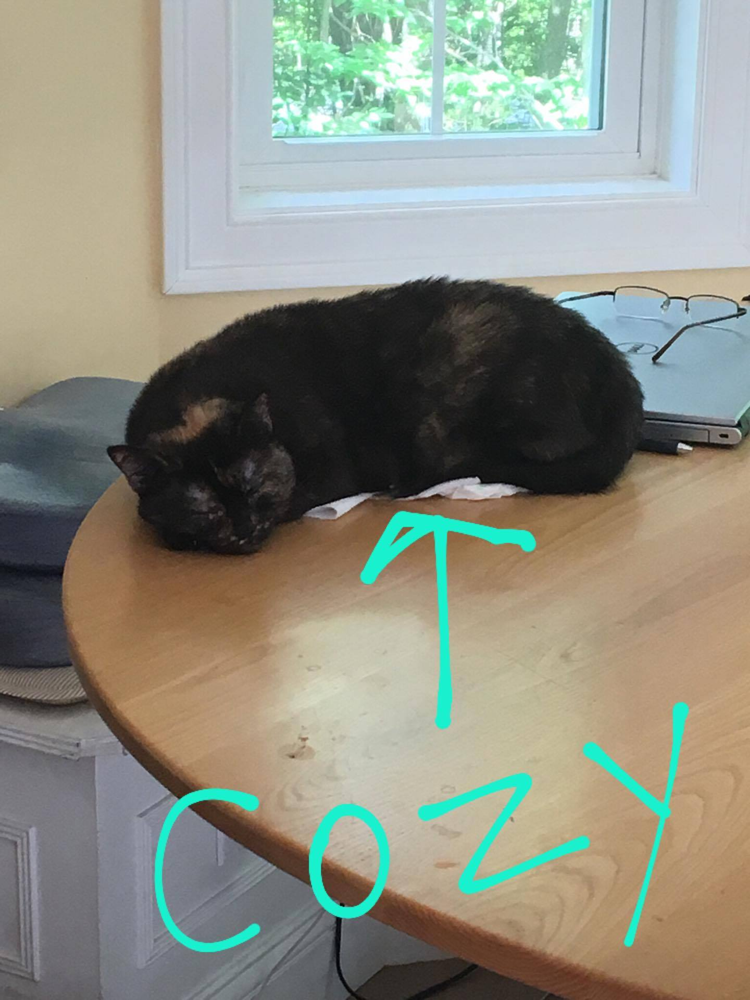

This photo was just taken a couple days ago on August 30th, and as you can see Sophie likes to start her day out by finding the freshly opened can of cat food that had been left on the counter for five seconds, and devour the entire thing. She does, however, seemed pretty pleased with herself!
After her mighty feast Sophie then proceeds to the napkins laying on the kitchen table for her nap (I know comfortable right!) This typically goes on for the rest of the day until someone gets home and feeds her again.